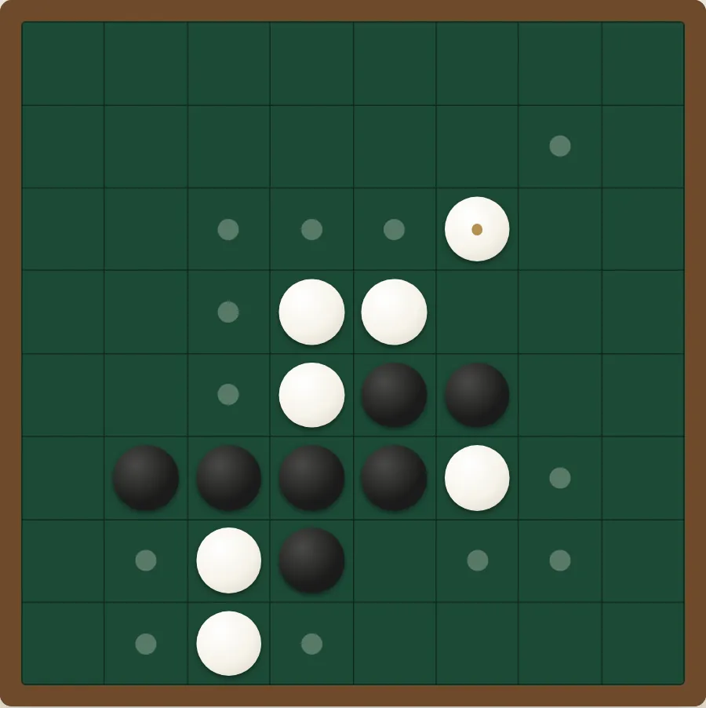
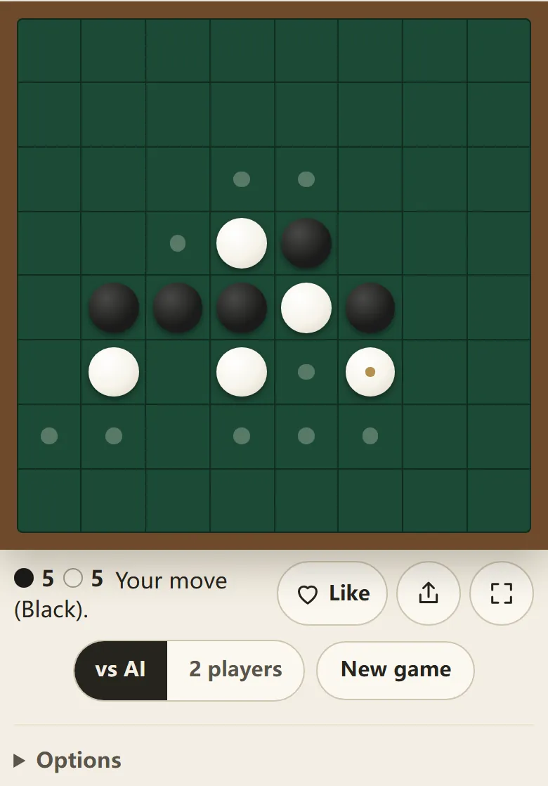

What is Reversi?
Reversi is a two-player strategy game played on an 8×8 board with discs that are black on one side and white on the other. You place a disc to trap a line of your opponent's discs, and every trapped disc flips to your colour. When neither side can move, whoever has more discs on the board wins.
The rules take a minute to learn, but a game of Reversi swings back and forth until the very last move. A position that looks lost at move 40 can turn around in a few flips. On this page you can play Reversi online for free against the computer, or pass the device back and forth with a friend.

How to play Reversi
The goal
Finish the Reversi game with more discs of your colour on the board than your opponent. A full board holds 64 discs, so a score such as 36–28 is a clear win, while 32–32 is a draw.
The start
Every game of Reversi here starts the same way: four discs in the centre, two black and two white, placed diagonally. Black always moves first. In the vs AI mode you are Black and the computer plays White.
Making a move
- Place one disc on an empty square so that one or more of your opponent's discs sit in a straight, unbroken line between the new disc and another disc of yours. Lines can run across, up and down, or diagonally.
- All the trapped discs flip to your colour. A single move can flip lines in several directions at once.
- If a square would not flip anything, you cannot play there. You also cannot pass while you still have a legal move.
Mouse and touch controls
Press Play Reversi, then click a square with the mouse or tap it with your finger. Faint dots mark every legal move, so you never have to guess whether a square is allowed; you can hide them under Options once you know the game. There is nothing to drag and no keyboard shortcut to remember. Use New game to restart and Fullscreen to give the board the whole screen.
No legal move: pass
Sometimes a Reversi player has no square that flips anything. By default that player must pass, the board shows a short message, and the other side moves again. If neither player can move, the game ends right away, even if some squares are still empty. Under Options you can switch to a stricter rule where the game ends as soon as one player has no legal move.
How the winner is decided
When a Reversi game ends, the discs are counted. The score under the board updates after every move, so you always know who is ahead. More discs wins; equal counts are a draw.

Playing Reversi here: your questions answered
Can I play Reversi against the computer?
Yes. This is the default way to play Reversi here: you play Black and the computer plays White. The AI uses a Monte Carlo tree search, which means it plays out many random games from the current position and picks the move that did best. It usually replies within a few seconds and never thinks for much longer than eight.
Can I play Reversi with a friend?
Yes, on the same screen. Press 2 players and a fresh Reversi game starts with both sides controlled by people: Black moves, then hand the phone or mouse over to White. There is no online multiplayer, no invite link and no chat. Both players need to be at the same device.
Can I make the Reversi AI harder or easier?
Not at the moment. There is a single AI level with no difficulty setting. If you find it too strong, keep the legal-move dots on and focus on the tips below; if you find it too easy, turn the dots off and try to win by a wide margin.
Is Reversi free? Do I need to download anything?
Reversi here is free to play and runs in your web browser. There is no download, no app to install and no account to create.
Can I play Reversi on my phone or tablet?
Yes. The board scales to your screen and you play by tapping. It is made for current browsers on phones, tablets and computers.
Will my Reversi game be saved?
No. A game in progress is not saved, so reloading or closing the page starts a new Reversi game. Your like is remembered in this browser only.
Reversi won't load. What can I do?
Reload the page and press Play again. The AI runs in a background worker, so very old browsers or strict privacy add-ons that block scripts can stop it from starting; updating the browser or allowing scripts for this site usually fixes it.
Reversi tips and strategy
These ideas are standard advice among experienced Reversi players. None of them wins on its own, but together they explain most games against the AI.
Take the corners
In Reversi, a disc in a corner can never be flipped, because there is no square beyond it to trap it from. Corners also anchor the edges next to them. Getting a corner is often the turning point of a Reversi game.
Be careful next to empty corners
The square diagonally next to a corner is called the X-square, and the two edge squares beside a corner are C-squares. Playing there while the corner is still empty often hands that corner to your opponent. Wait until the corner is taken or you have no better choice.
Edges are strong, but not automatically
Discs on the edge are harder to flip than discs in the middle, so edges are useful. A badly placed edge disc can still give your opponent a way into the corner, so check what your move allows on the next turn.
Keep your options open
In Reversi, mobility means how many legal moves you have. Try to keep yours high and your opponent's low. When the other player has only bad moves left, they must play one, and that is often how corners change hands in Reversi.
Fewer discs early is fine
Flipping as many discs as possible feels good, but in the opening and middle game it often helps your opponent by giving them more discs to flip back and more places to move. Quiet moves that flip one or two discs are often better. Count discs at the end of a Reversi game, not at the start.
Reversi FAQ
Is Reversi the same as Othello?
They are very close. Othello is a trademarked game with the same board, discs and flipping rules, and it is often used as another name for Reversi. Historically, the two differed in how the game opened: in early Reversi the centre squares were filled by the players' first moves, while Othello fixes the starting position with four discs placed diagonally. This site uses that fixed diagonal start.
Is Reversi a solved game?
A 2023 study says yes, for the standard 8×8 board. Hiroki Takizawa posted a preprint reporting a computer proof that perfect play by both players leads to a draw (arXiv:2310.19387). That is a research result for flawless play; it does not change how a normal game of Reversi feels, where both sides make plenty of mistakes.
Where does Reversi come from?
Reversi dates from England in the 1880s. Two Englishmen, Lewis Waterman and John W. Mollett, each claimed to have invented it.
Who moves first in Reversi?
Black moves first. On this site you are Black when you play against the AI; in 2 players mode, whoever takes Black starts.
Can a Reversi game end before the board is full?
Yes. The game ends as soon as neither player has a legal move, which can leave empty squares. It can even end with one colour wiped off the board entirely.
Can I play Reversi online against other people?
No. You can play against the computer or with a second person on the same device. Playing against someone on another device is not available.